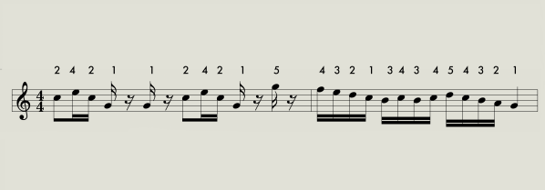

タップ音のWeb録音
ピアノの運指とタイミングについての実験です。
楽曲に合わせて端末を指先で叩き、音声ファイルの記録を行っていただきます。
注意事項
この実験ではマイクとイヤホン・ヘッドホンが必要になります。
Google Chrome
を使用してください。その他ブラウザでは正常に動作しない場合があります。
Google Chormeにてマイクの使用を拒否すると録音ができません。
拒否してしまった場合は再読み込み後許可をしてください。
ノートPC内蔵マイクで録音をする場合は内蔵マイクの近くを叩いて録音を行ってください。
録音後、音声ファイル(WAVファイル)がダウンロードできます。
準備
ヘッドホン・イヤホンを接続し、譜面下の楽曲が再生出来るか確認をしてください。
譜面上、音符の上にある数字はどの指かを表しています。番号に対応した指で叩いてください。
1：親指、2：人差し指、3：中指、4：薬指、5：小指
録音前に何度か練習を行っても大丈夫です。
手順
1.譜面下の楽曲を再生
2.録音ボタンを押す
3.譜面を確認しながら、楽曲に合わせて端末をタップ
4.楽曲が終了したら停止ボタンを押す
5.表示された録音ファイルをダウンロード
6.下記のGoogleフォームで簡単な質問に答えた後録音ファイルを添付
Googleフォーム
タップ中に指を間違えてしまった場合は間違えた箇所(何番目)とどの指でタップしてしまったかをフォームに記入してください
問題等あれば山口 (g3119033e2@edu.teu.ac.jp)までご連絡をお願いします。

HTML5のaudioに対応していないブラウザのためサンプルは表示されません。
record
stop
Recordings
Log